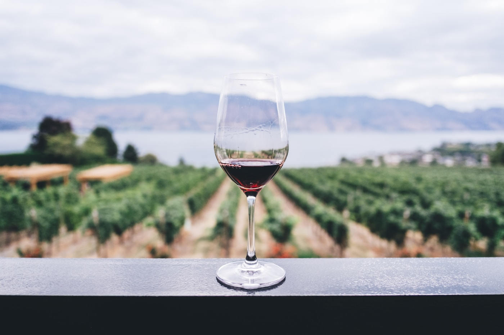

FOOD & BEVERAGE
食品与饮料
从酒类醇化出发，连接风味、质构与液体食品的处理过程。
SCENARIOS & PROCESSES
从产品场景
找到工艺方向
酒类醇化与品质优化是我们的旗舰应用。围绕不同食品原料和产品目标，悬浮空化技术进一步延伸至咖啡茶饮、乳品、植物饮品及配料处理，在尊重产品自身特性的基础上，探索流体处理的新可能。
01
酒类醇化与品质优化
以酒体风味与口感为核心，探索悬浮空化技术在酒液处理中的应用。
02啤酒与发酵饮品
关注酒花与原料成分的释放，以及发酵饮品中的混合和处理环节。
03软饮与果汁
连接果汁、浓缩液与饮料配方的混合、均匀性和储存稳定。
04咖啡与茶饮
研究水与植物原料接触中的传质过程，关注萃取效率和风味平衡。
05乳品与乳基饮料
围绕脂肪、蛋白与水相的组织状态，探索均质和配料处理。
06植物饮品与植物原料
面向豆、燕麦和坚果等原料的提取、分散与饮品质构。
07调味品与酱料
关注油水体系、香辛料与增稠组分的混合和分散。
08油脂与功能成分
探索油性成分的释放、载入与油水体系中的分布。
09糖果与冷冻食品
面向糖浆、可泵送预混料与冷冻饮品基料的配料过程。
010预制食品与其他食品
关注汤品、蛋液与液态食品配料中的混合和质构控制。